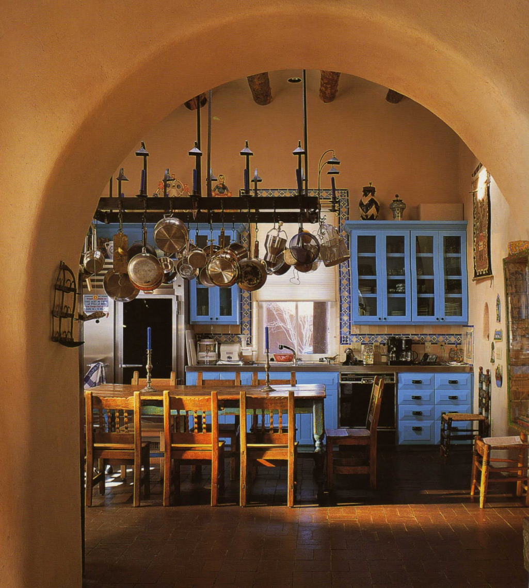
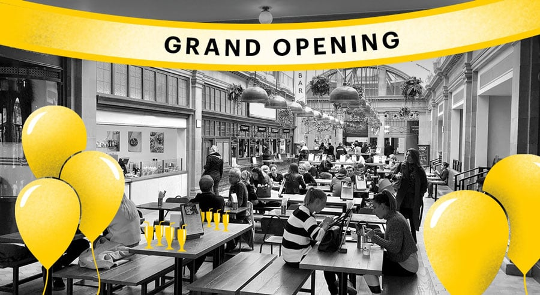

Here's how we became the most beloved Mexican Restaurant in New York City

How it started
In 2008, Miskatul and her family arrived in New York City carrying little more than their grandmother's handwritten recipe book, a worn leather journal stuffed with decades of Oaxacan cooking secrets. What started as Sunday dinners for neighbors quickly grew into something much bigger.
Inspired by the vibrant street food of Mexico City and the bold moles of their hometown, the family decided to share their food with the whole city.

The first location
The first Miskatul's Mexican Restaurant opened in March 2012 on a quiet corner in Bushwick, Brooklyn. The line wrapped around the block on opening day as word had spread fast about the hand-pressed tortillas and slow-braised carnitas that took 12 hours to prepare.
Every dish was made from scratch, every morning, with ingredients sourced from local Brooklyn markets and trusted suppliers who shared the same passion for quality.
Where we are today
Today, we celebrate the 14th anniversary of Miskatul's Mexican Restaurant in our three locations across Manhattan and Brooklyn. The same grandmother's recipes, the same 12-hour carnitas, the same love poured into every plate.
We believe food is memory. Every taco, burrito, and bowl we serve carries a piece of our family's story — and we hope it becomes part of yours.